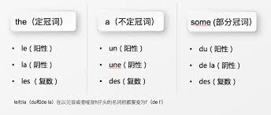
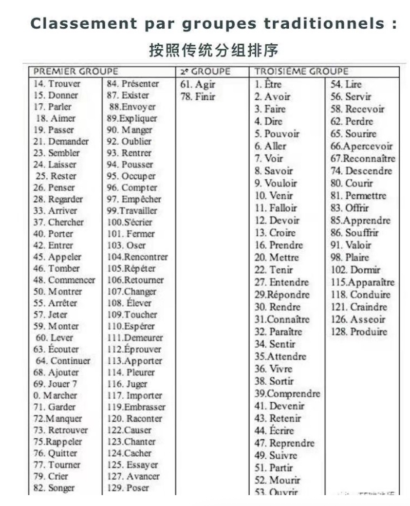

the (定冠词)
le（阳性）la（阴性）les（复数）a (不定冠词)
un（阳性）une（阴性）des（复数）some (部分冠词)
du（阳性）de la（阴性）des（复数）à + le = auJe vais au cinéma.à 是介词表示方向或位置，而 le
是阳性单数定冠词。à + les = auxJe parle aux enfants.à 表示方向或位置，而 les
是复数定冠词。de + le = duIl vient du marché.de 表示来源，而 le
是阳性单数定冠词。de + les = desC'est la maison des voisins.de 表示所属，而 les
是复数定冠词。Premier groupeDeuxième groupeTroisième groupeils / elles 对应的动词变位，ent
不发音。er 之后加上：
je: -etu: -esil / elle / on: -enous: -onsvous: -ezils / elles: -entparler
je parletu parlesil / elle parlenous parlonsvous parlezils / elles parlent-ger 结尾：nous -geons-cer 结尾：nous -çonslancer
je lancetu lancesil lancenous lançonsvous lancezils lancentchanger
je changetu changesil changenous changeonsvous changezils changenté -> èé 的单词，在
je / tu / il-elle / ils-elles 变位时，将倒数第二个音节的
é 变为 è。répéter
je répètetu répètesil répètenous répétonsvous répétezils répètenty -> ioyer, uyer 结尾的单词，在
je / tu / il-elle / ils-elles 变位时，将 y
变为 i。ayer 结尾的动词既可以变 i，也可以保留
y。essuyer
j’essuietu essuiesil essuienous essuyonsvous essuyezils essuiente -> èe 并且 e 发
[ə] 或不发音时，在
je / tu / il-elle / ils-elles 变位时，将 e
变为 è。acheter
j’achètetu achètesil / elle achètenous achetonsvous achetezils / elles achètentlever
je lèvetu lèvesil lèvenous levonsvous levezils lèventeler 或 eter
结尾的单词，在动词变位时双写辅音，而不是将 e 变为
è。appeler
j’appelletu appellesil / elle appellenous appelonsvous appelezils / elles appellentjeter
je jettetu jettesil jettenous jetonsvous jetezils jettentir 加相应词尾
je -istu -isil / elle / on -itnous -issonsvous -issezils / elles -issentfinir
je finistu finisil / elle / on finitnous finissonsvous finissezils / elles finissent
